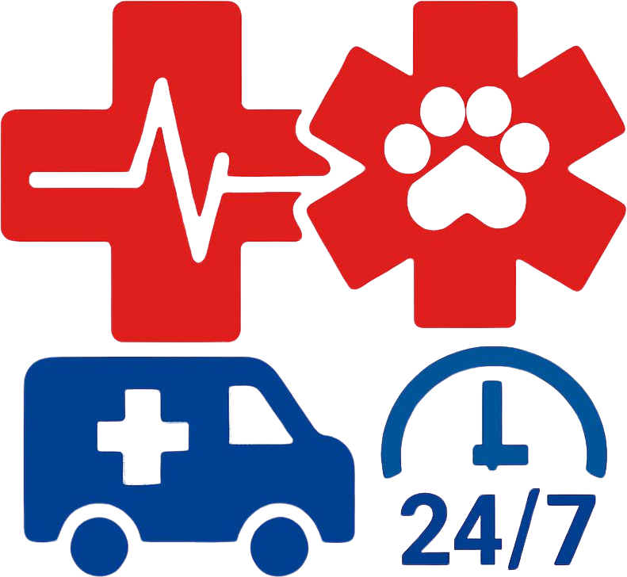

Consulta Médica General
Evaluación clínica completa para perritos y gatitos.
Cuidado profesional y amor para tus mascotas
Ofrecemos la mejor atención médica, vacunas y estética para tus mascotas en San Marcos.
¡Tu tranquilidad y la salud de tu compañero son nuestra prioridad!

Evaluación clínica completa para perritos y gatitos.

Protección contra parvovirus, rabia y profilaxis completa.
Baño medicado, corte de pelo e higiene de oídos y uñas.

Nutrición especializada recomendada por médicos veterinarios.

Atención prioritaria y estabilización clínica las 24 horas.

Correas, collares y juguetes didácticos para el entretenimiento en casa.